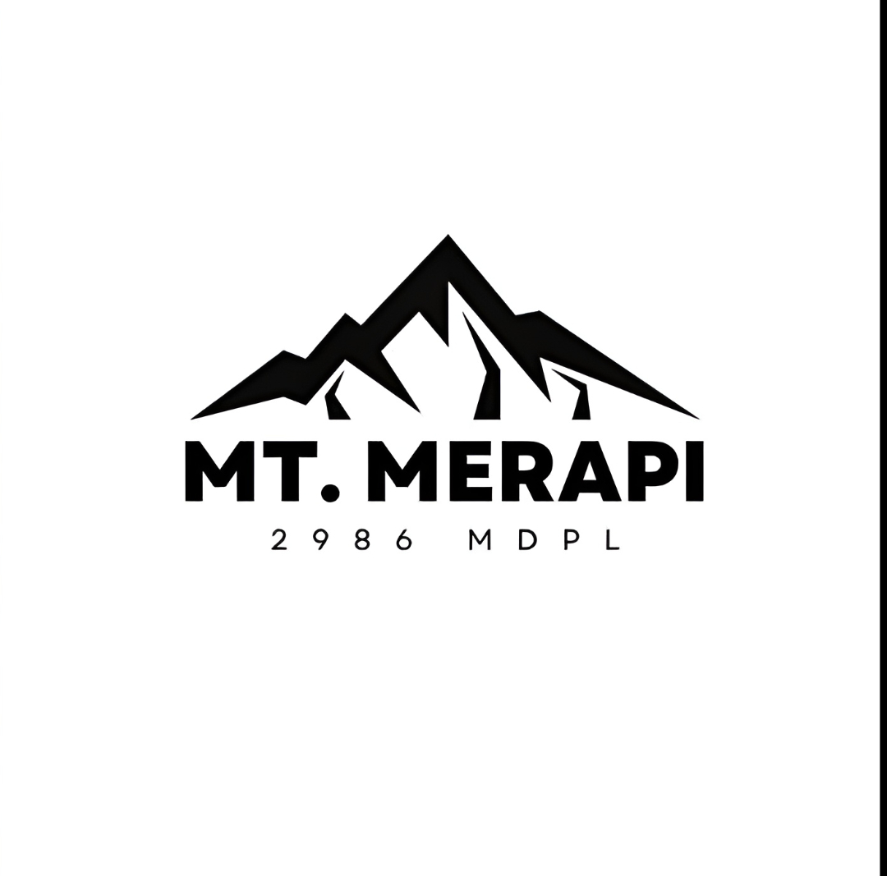

Gunung Merapi adalah salah satu gunung berapi teraktif di dunia, yang terletak di perbatasan Daerah Istimewa Yogyakarta (Kabupaten Sleman) dan Jawa Tengah (Kabupaten Magelang, Boyolali, dan Klaten).
Nama "Merapi" berasal dari penyingkatan "meru" ('gunung') dan "api", sehingga nama "merapi" sebenarnya sudah berarti "gunung api". Dalam naskah lama, Merapi pernah dikenal sebagai Mandrageni.
Karena Gunung Merapi sangat disakralkan, Kesultanan Ngayogyakarta Hadiningrat memiliki seorang juru kunci yang bertugas menjaga gunung.Seorang abdi dalem Keraton Yogyakarta Mas Bekel Anom Suraksosihono, atau Mas Asih menggantikan ayahnya Mbah Maridjan yang meninggal dalam erupsi gunung Merapi pada tahun 2010.
Sejak tahun 2004, kawasan hutan di lerengnya ditetapkan sebagai Taman Nasional Gunung Merapi (TNGM) untuk melindungi keragaman flora dan fauna, serta berfungsi sebagai daerah resapan air penting bagi wilayah sekitarnya.
Sejarah & BudayaErupsi Besar: Letusan tahun 2010 merupakan salah satu yang terbesar dalam sejarah modern. Kearifan Lokal: Erat dengan tradisi ritual Keraton Yogyakarta seperti upacara Labuhan. Mbah Maridjan: Tokoh juru kunci ikonik yang wafat saat menjaga Merapi tahun 2010
Gunung Merapi merupakan salah satu gunung api kerucut paling aktif di dunia yang terletak di perbatasan Provinsi Jawa Tengah dan Daerah Istimewa Yogyakarta. Memiliki ketinggian sekitar 2.911 meter di atas permukaan laut, gunung ini terkenal dengan siklus letusan pendek antara dua hingga lima tahun sekali yang menjadikannya sangat berbahaya bagi pemukiman padat di lerengnya. Karakteristik letusan Merapi yang paling khas adalah pembentukan kubah lava di puncaknya, yang jika runtuh akan meluncurkan awan panas guguran bersuhu tinggi atau biasa disebut warga lokal sebagai wedhus gembel.
Di balik potensi bencananya yang besar, Gunung Merapi menyimpan pesona alam dan nilai budaya yang sangat melekat bagi masyarakat sekitarnya. Endapan material vulkanik hasil erupsinya secara berkala menyuburkan tanah pertanian di kawasan Sleman, Magelang, Boyolali, dan Klaten, menjadikannya salah satu daerah agraris tersubur di Pulau Jawa. Selain itu, kawasan lerengnya kini menjadi pusat wisata edukasi populer seperti aktivitas Lava Tour menggunakan mobil jip, serta tetap disakralkan melalui berbagai ritual adat tahunan oleh Keraton Yogyakarta sebagai bentuk keharmonisan antara manusia dan alam.
Nulla aliquam felis mi, volutpat convallis lorem eleifend id. Interdum et malesuada fames ac ante ipsum primis in faucibus.